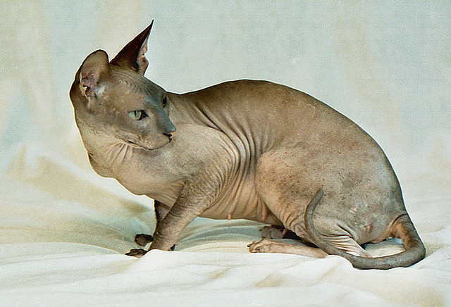

Sfinks
Wygląd
Sfinks jest kotem średniej wielkości, o lekko wydłużonym ciele i średniej muskulaturze, powinien wyglądać krzepko. Waży od 3 do 4kg. Jego głowa jest średniej wielkości, w kształcie klina, kości policzkowe i brwiowe wydatne. Ma czoło płaskie, pokryte licznymi zmarszczkami. Nos średniej długości, stop niezbyt wyraźny.
Charakter i zachowanie
Sfinks wykazuje niezwykłe przywiązany do właściciela. Jest wesoły, łagodny, uczuciowy i przyjazny, chętnie przesiaduje na kolanach, choć nie lubi nadmiernych pieszczot. Ma zrównoważony charakter i umiarkowany temperament, jest ciekawski i wszędobylski. Dobrze adaptuje się w grupie kotów.
Pielęgnacja
Nie wymaga specjalnej pielęgnacji. Wskazana kąpiel, przemycie oczu, czyszczenie uszu i koniecznie obcięcie pazurów.